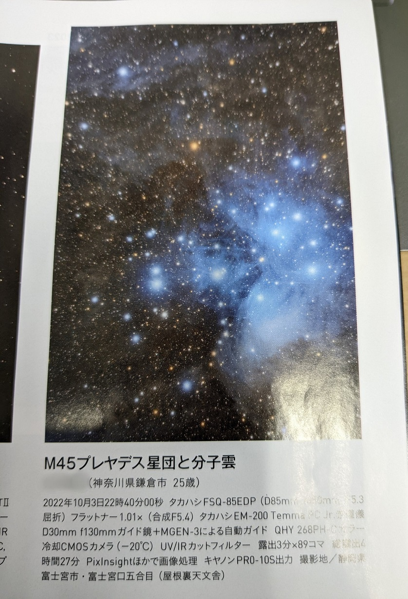
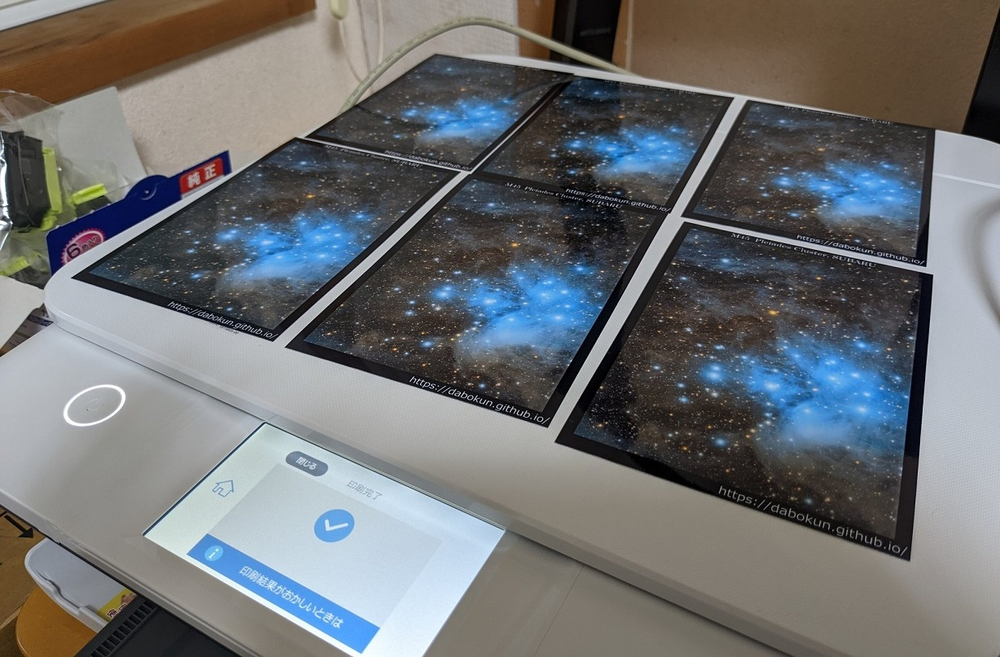

<!DOCTYPE html>
<html>

<head><meta name="generator" content="Hexo 3.8.0">
  <meta charset="utf-8">
  
    <title>
      
        月間天文ガイド2023年1月号に掲載していただきました | 
            ほしよみ大学生のブログ
    </title>
    <meta name="viewport" content="width=device-width">
    <meta name="description" content="あいさつ？こんにちは．皆既月食に星フェス，ライブとブログに書きたいネタが溜まっていますが今回は短めで．昨日12月5日発売になりました月間天文ガイド2023年1月号 読者の天体写真ビギナーの部に M45 の写真を掲載していただきました．">
<meta name="keywords" content="天体写真,その他">
<meta property="og:type" content="article">
<meta property="og:title" content="月間天文ガイド2023年1月号に掲載していただきました">
<meta property="og:url" content="http://dabokun.github.io/2022/12/06/00000069-tenmonguide202301/index.html">
<meta property="og:site_name" content="ほしよみ大学生のブログ">
<meta property="og:description" content="あいさつ？こんにちは．皆既月食に星フェス，ライブとブログに書きたいネタが溜まっていますが今回は短めで．昨日12月5日発売になりました月間天文ガイド2023年1月号 読者の天体写真ビギナーの部に M45 の写真を掲載していただきました．">
<meta property="og:locale" content="ja">
<meta property="og:image" content="http://dabokun.github.io/2022/12/06/00000069-tenmonguide202301/card.jpg">
<meta property="og:updated_time" content="2022-12-06T06:51:13.423Z">
<meta name="twitter:card" content="summary_large_image">
<meta name="twitter:title" content="月間天文ガイド2023年1月号に掲載していただきました">
<meta name="twitter:description" content="あいさつ？こんにちは．皆既月食に星フェス，ライブとブログに書きたいネタが溜まっていますが今回は短めで．昨日12月5日発売になりました月間天文ガイド2023年1月号 読者の天体写真ビギナーの部に M45 の写真を掲載していただきました．">
<meta name="twitter:image" content="http://dabokun.github.io/2022/12/06/00000069-tenmonguide202301/card.jpg">
<meta name="twitter:creator" content="@dabo_pic">
      
        <link rel="alternative" href="/atom.xml" title="ほしよみ大学生のブログ" type="application/atom+xml">
        
          
            <link rel="icon" href="/images/favicon.png">
            
              <link rel="stylesheet" href="/css/style.css">
                <!--[if lt IE 9]><script src="//html5shiv.googlecode.com/svn/trunk/html5.js"></script><![endif]-->
                
                  <script data-ad-client="ca-pub-1350688970555904" async src="https://pagead2.googlesyndication.com/pagead/js/adsbygoogle.js"></script>
</head></html>
<body>
  <div id="container">
    <div class="mobile-nav-panel">
	<i class="icon-reorder icon-large"></i>
</div>
<header id="header">
	<h1 class="blog-title">
		<a href="/">ほしよみ大学生のブログ</a>
	</h1>
	<nav class="nav">
		<ul>
			<li><a href="/">Home</a></li><li><a href="/categories">Categories</a></li><li><a href="/tags">Tags</a></li><li><a href="/archives">Archives</a></li><li><a href="/about">About</a></li><li><a href="/work">Work</a></li>
			<li><a id="nav-search-btn" class="nav-icon" title="Search"></a></li>
			<li><a href="https://github.com/dabokun"></a>
			</li>
			<li><a href="https://twitter.com/dabo_pic"></a></li>
			<li><a href="/atom.xml" id="nav-rss-link" class="nav-icon" title="RSS Feed"></a>
			</li>
		</ul>
	</nav>
	<div id="search-form-wrap">
		<form action="//google.com/search" method="get" accept-charset="UTF-8" class="search-form"><input type="search" name="q" class="search-form-input" placeholder="Search"><button type="submit" class="search-form-submit">&#xF002;</button><input type="hidden" name="sitesearch" value="http://dabokun.github.io"></form>
	</div>
</header>
    <div id="main">
      <article id="post-00000069-tenmonguide202301" class="post">
	<footer class="entry-meta-header">
		<span class="meta-elements date">
			<a href="/2022/12/06/00000069-tenmonguide202301/" class="article-date">
  <time datetime="2022-12-06T03:36:11.000Z" itemprop="datePublished">2022-12-06</time>
</a>
		</span>
		<span class="meta-elements author">astr0dab0</span>
		<div class="commentscount">
			
			<a href="http://dabokun.github.io/2022/12/06/00000069-tenmonguide202301/#disqus_thread" class="article-comment-link">Comments</a>
			
		</div>
	</footer>
	
	<header class="entry-header">
		
  
    <h1 class="article-title entry-title" itemprop="name">
      月間天文ガイド2023年1月号に掲載していただきました
    </h1>
  

	</header>
	<div class="entry-content">
		
		
		<div id="toc" class="toc-article">
			<p class="toc-title">目次</p>
			<ol class="toc"><li class="toc-item toc-level-3"><a class="toc-link" href="#あいさつ？"><span class="toc-number">1.</span> <span class="toc-text">あいさつ？</span></a></li></ol>
		</div>
		
		<h3 id="あいさつ？"><a href="#あいさつ？" class="headerlink" title="あいさつ？"></a>あいさつ？</h3><p>こんにちは．皆既月食に星フェス，ライブとブログに書きたいネタが溜まっていますが今回は短めで．昨日12月5日発売になりました月間天文ガイド2023年1月号 読者の天体写真ビギナーの部に M45 の写真を掲載していただきました．</p>
<a id="more"></a>
<p><br>書店にお立ち寄りの際は是非ご覧ください．<a href="https://dabokun.github.io/2022/10/04/00000066-2022-09-10/#10%E6%9C%88%E5%88%9D%E3%82%81-%E4%BA%94%E5%90%88%E7%9B%AE">10月頭に五合目で撮影したもの</a>ですね．11月末の坂本真綾ライブでもフォロワーさんのほしい方にはがきサイズで印刷してお配りしていた写真です．この時の話はまた次回．<br><br>プレヤデスと書かれていますがプレアデスのほうが正しいかもしれません（応募用紙をいつも手書きで書いて送っていて，手元に自分で何と書いたかのデータが残っていないのは今後改善したいと思います）．講評では星の中心はもっと飛ばしたほうが良いということで，眠めの画を作っている自覚はあるのでここも今後取り入れていきたいと思います．まだ自分のビギナー枠は一回分残っていますので有効に使っていくつもりです笑．<br>最初に書きました通りブログに書きたいネタが溜まっているので次のを書きます．<br>それでは！</p>

		
	</div>
	<footer class="article-footer">
		<a href="https://twitter.com/intent/tweet?text=%E6%9C%88%E9%96%93%E5%A4%A9%E6%96%87%E3%82%AC%E3%82%A4%E3%83%892023%E5%B9%B41%E6%9C%88%E5%8F%B7%E3%81%AB%E6%8E%B2%E8%BC%89%E3%81%97%E3%81%A6%E3%81%84%E3%81%9F%E3%81%A0%E3%81%8D%E3%81%BE%E3%81%97%E3%81%9F｜%E3%81%BB%E3%81%97%E3%82%88%E3%81%BF%E5%A4%A7%E5%AD%A6%E7%94%9F%E3%81%AE%E3%83%96%E3%83%AD%E3%82%B0&url=http://dabokun.github.io/2022/12/06/00000069-tenmonguide202301/" class="twitter-share-button" target="_blank" title="Twitter"></a>
		<script async src="https://platform.twitter.com/widgets.js" charset="utf-8"></script>

		<div id="fb-root"></div>
		<script async defer crossorigin="anonymous" src="https://connect.facebook.net/ja_JP/sdk.js#xfbml=1&version=v4.0"></script>
		<div class="fb-share-button" data-href="http://dabokun.github.io/2022/12/06/00000069-tenmonguide202301/" data-layout="button_count" data-size="small"><a target="_blank" href="https://www.facebook.com/sharer/sharer.php?u=https%3A%2F%2Fdabokun.github.io%2F&amp;src=sdkpreparse" class="fb-xfbml-parse-ignore">シェア</a></div>
	</footer>
	<footer class="entry-footer">
		<div class="entry-meta-footer">
			<span class="category">
				
  <div class="article-category">
    <a class="article-category-link" href="/categories/astrophotography/">天体写真</a>
  </div>

			</span>
			<span class=" tags">
				
  <ul class="article-tag-list"><li class="article-tag-list-item"><a class="article-tag-list-link" href="/tags/others/">その他</a></li><li class="article-tag-list-item"><a class="article-tag-list-link" href="/tags/astrophotography/">天体写真</a></li></ul>

			</span>
		</div>
	</footer>
	
	
<nav id="article-nav">
  
    <a href="/2022/12/27/00000071-2022-12-amagi/" id="article-nav-newer" class="article-nav-link-wrap">
      <strong class="article-nav-caption">Newer</strong>
      <div class="article-nav-title">
        
          2022年12月 天城
        
      </div>
    </a>
  
  
    <a href="/2022/10/30/00000068-asagiri-akagi/" id="article-nav-older" class="article-nav-link-wrap">
      <strong class="article-nav-caption">Older</strong>
      <div class="article-nav-title">
        
          10月後半遠征
        
      </div>
    </a>
  
</nav>

	
</article>


<section id="comments">
	<div id="disqus_thread">
		<noscript>Please enable JavaScript to view the <a href="//disqus.com/?ref_noscript">comments powered by
				Disqus.</a></noscript>
	</div>
</section>

    </div>
    <div class="mb-search">
  <form action="//google.com/search" method="get" accept-charset="utf-8">
    <input type="search" name="q" results="0" placeholder="Search">
    <input type="hidden" name="q" value="site:dabokun.github.io">
  </form>
</div>
<footer id="footer">
	<h1 class="footer-blog-title">
		<a href="/">ほしよみ大学生のブログ</a>
	</h1>
	<span class="copyright">
		&copy; 2022 astr0dab0<br>
		Modify from <a href="http://sanographix.github.io/tumblr/apollo/" target="_blank">Apollo</a> theme, designed by <a href="http://www.sanographix.net/" target="_blank">SANOGRAPHIX.NET</a><br>
		Powered by <a href="http://hexo.io/" target="_blank">Hexo</a>
	</span>
</footer>
    
<script>
  var disqus_shortname = 'astr0dab0';
  
  var disqus_url = 'http://dabokun.github.io/2022/12/06/00000069-tenmonguide202301/';
  
  (function(){
    var dsq = document.createElement('script');
    dsq.type = 'text/javascript';
    dsq.async = true;
    dsq.src = '//go.disqus.com/embed.js';
    (document.getElementsByTagName('head')[0] || document.getElementsByTagName('body')[0]).appendChild(dsq);
  })();
</script>


<script src="//ajax.googleapis.com/ajax/libs/jquery/2.0.3/jquery.min.js"></script>


<link rel="stylesheet" href="/fancybox/jquery.fancybox.css" media="screen" type="text/css">
<script src="/fancybox/jquery.fancybox.pack.js"></script>


<script src="/js/script.js"></script>
  </div>
</body>
</html>